Multi-style conversion for semantic segmentation of lesions in fundus images by adversarial attacks
Paper submitted at Medical Image Analysis
Clément Playout, Renaud Duval, Marie Carole Boucher, Farida Cheriet
Follow with your phone:
Context
- Retinal lesions are used to diagnos DR
- We focus on four lesions:
- Exudates
- Cotton wool spot
- Hemorrhages
- Microaneurysms
Context
We use 5+1 databases, each with a specific annotation style
We can quantify the discrepancy
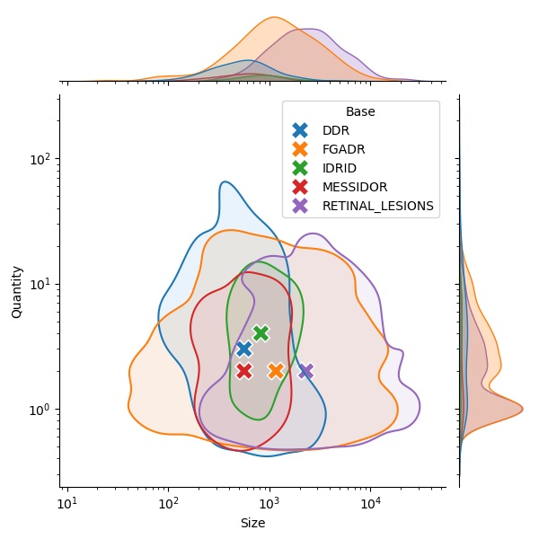 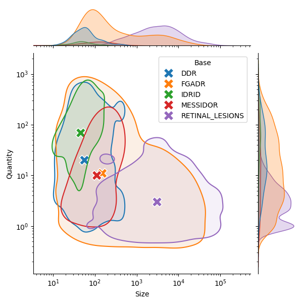 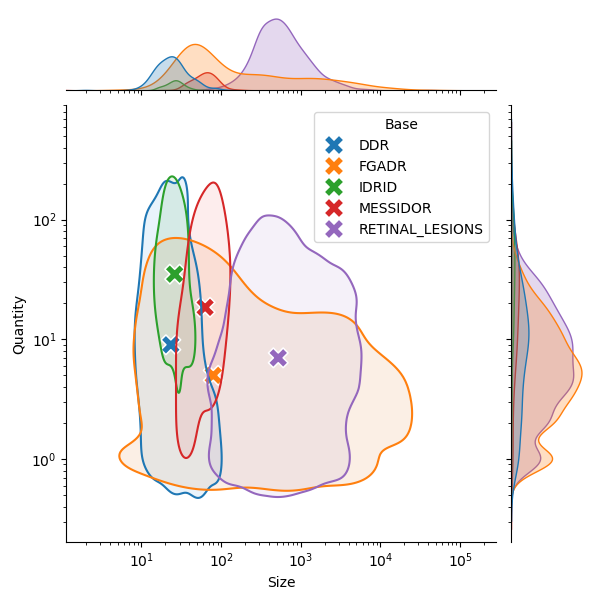 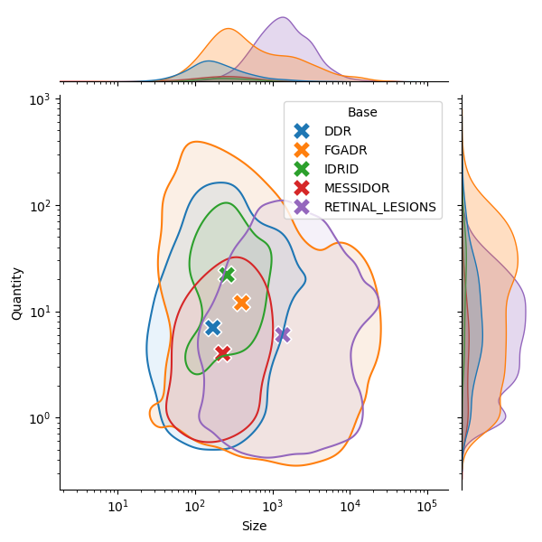Images also vary
- In quality: 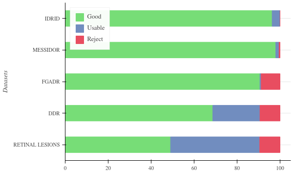
- In size, resolution, number of labellers...:
Dataset Train Test Resolution # labellers IDRiD 54 27* 2848x4288 3 MESSIDOR 140 60* 1500x1500 7 DDR 383+149* 225* 1934x1956 6 RET-LES 1115 478 896x896 45 FGADR 1290 552 1280x1280 3
What does a model learn from heterogenous/noisy data/labels?
- We are interested in caracterizing the impact of the data heterogeneity on the model's performance.
- There are multiple incompatible ways to label the same image, and the model has to learn from all of them.
- Which one(s) will it learn from?
- Can we control its behavior?
Relevant literature
The literature often frames this problem under the scope of noisy labels
There are mainly two ways to deal with it:
- By estimating the real groundtruth (i.e predicting a Noise Transition Matrix, doing label correction, strong regularization, etc...)
- By assuming there is no "real groundtruth" but only multiple simultenously plausible hypothesis
Our approach
We train a (regular) model on all the datasets combined
We observe what is going on
We then propose a strategy to adjust the style of a model's prediction
Finding an effective training strategy
We ran hundreds of "sweeps" to the find optimal training hyperparameters using Bayesian Optimization
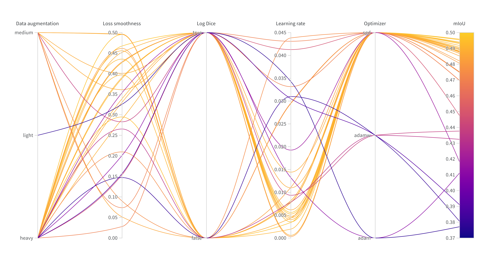 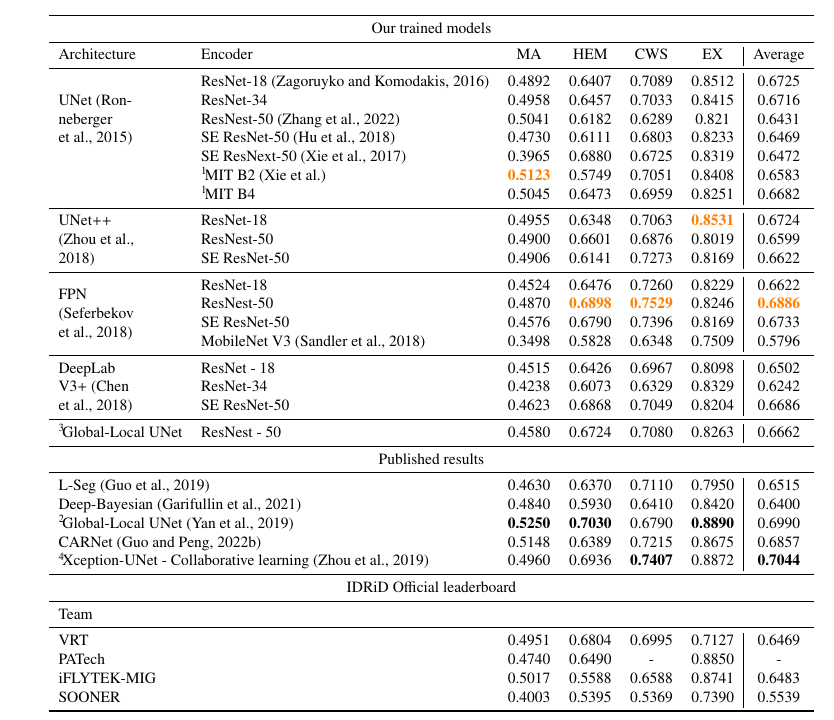Cross-datasets evaluation
With the chosen architecture, we evaluate its performance on the five test sets
As a baseline, we use the same architecture trained on one dataset only
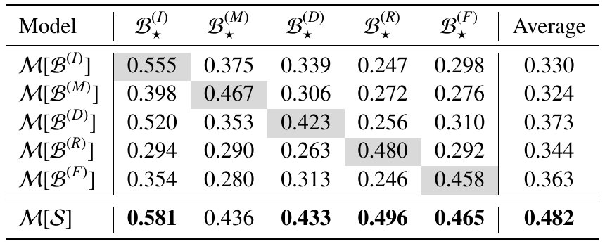An unexpected behavior
Spontaneous style adaptation
- The fact that the model changes its style indicates that it has learnt a systematical "database bias"
- Even on test sets, therefore, the image itself betrays its origin
- We try to induce the bias naively by altering the image:
Learnability of the bias
- We know there is something in the image that betrays its origin
- It is not "obvious"
- Let's train a secondary model to recognize a database based on the features of the segmentation model
- We use the concept of Linear Probe
Learnability of the bias
We test the accuracy of the probe with respect to its position in the segmentation model
Training a linear probe is very fast
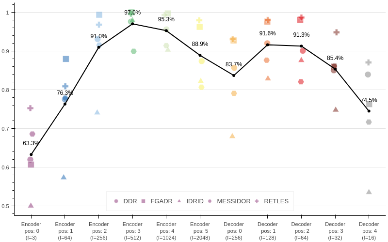And we obtain almost a perfect score
Inducing a bias
So the model has a "recognition bias"
It changes its segmentation style based on the recognized origin of the image
What if we fool its recognition capability?
- but can we do it...
- and will it change the segmentation style?
To fool the probe, we propose to use Targeted Adversarial Attacks
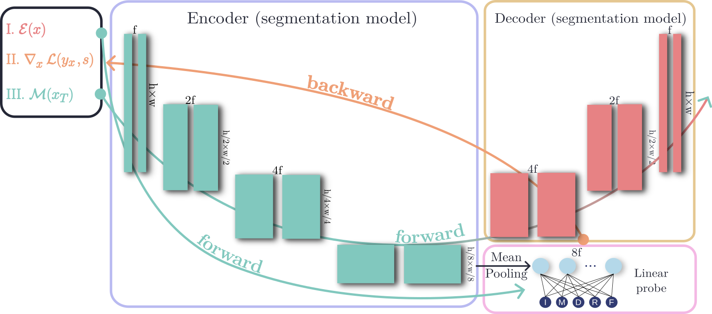 \[ x_{perturbed} = x - \epsilon \cdot \text{sign}(\nabla_x \mathcal{L}(y_x, t)) \]Does it fool the probe?
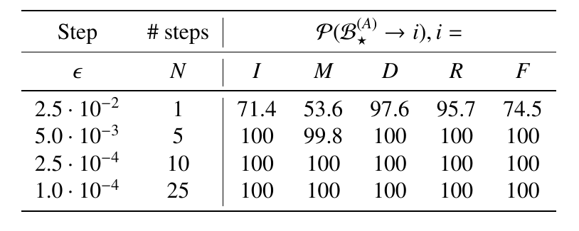Percentage of case were the probe predicts "i" on 3665 images from another database
So it is very easy to fool a linear probe
Does it fool the segmentation model?
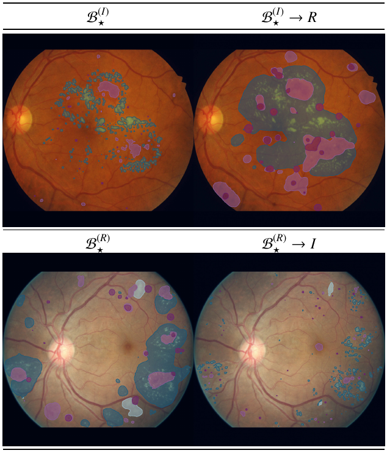Left column: original image and its segmentation, right column: modified image and its new segmentation
But does it change the image?
We train a new model to do DR classification. The model is a ConvNext, its predicts the disease on a scale from 0 to 5 continuously
We evaluate the model on the original and modified images
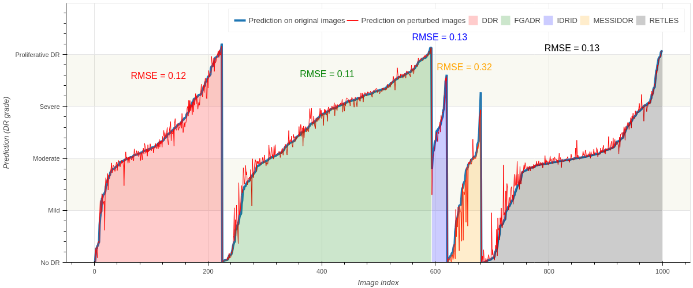The RMSE is way below the threshold to modify the predicted grade
Comparison with SOTA
We train a Conditional Stochastic Segmentation Network (C-SSN) using the same network architecture
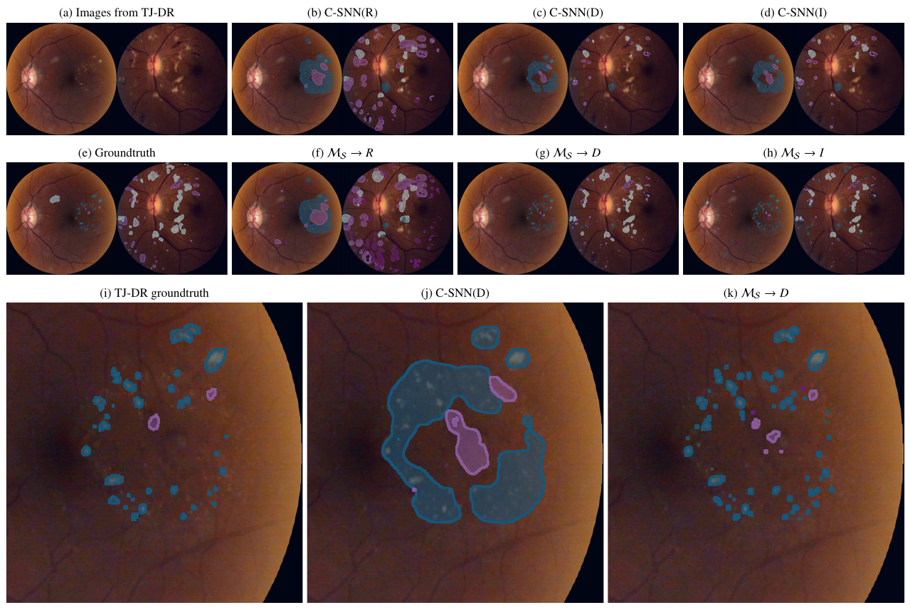Continuous style interpolation
We can interpolate between the styles of two databases. \[ x_{inter} = (1-\alpha) \cdot x + \alpha \cdot (x \rightarrow j) \]

But do we have any clinical use for that?
-
We propose two applications of our methodology
- Improving the performance of a model on external data
- Estimating the uncertainty in the segmentation maps
Improving the performance of a model on external data
We train a model on a dataset, and we want to improve its performance on another dataset
We can use the adversarial attack to convert the style of the model's prediction to the target dataset
It is a form of domain adaptation
We use a validation subset to estimate the appropriate conversion (per lesion)
Estimating the uncertainty in the segmentation maps
For each pixel, we can estimate the uncertainty of the model's prediction
We use Monte-Carlo sampling by parametrizing $\alpha$ as a random variable
\[ x_{\alpha} = (1-\alpha) \cdot x + \alpha \cdot (x \rightarrow j) \text{ with } \alpha \sim \mathcal{U}(0, 1) \] The uncertanty map is the std of the predictions: \[ U_A = \sigma_{\alpha} (M(x_\alpha)) \]
Conclusion
We propose a method to convert the style of a model's prediction
We show that it is possible to fool a model's recognition bias
We show that it is possible to estimate the uncertainty of the model's prediction
We show that it is possible to improve the performance of a model on external data
We show that it is possible to interpolate between the styles of two databases